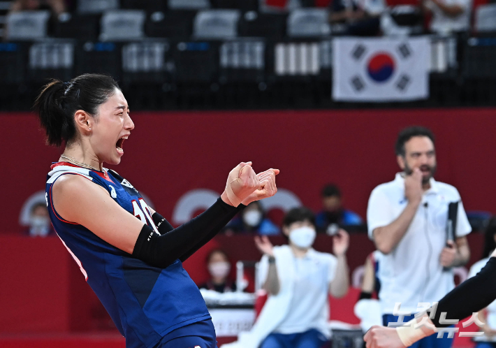

김연경(金軟景, Kim Yeon-Koung, 1988년 2월 26일~)은 대한민국의 배구 선수로 포지션은 레프트이다. 현재 중국 여자 프로배구리그 클럽인 상하이 브라이트 유베스트와 대한민국 여자 배구 국가대표팀 소속으로 뛰고 있다. 2005년 흥국생명에 입단하여 데뷔하였고 2012년 런던 올림픽 여자 배구 대회 MVP를 수상한 바 있다.

인천 흥국생명 핑크스파이더스 (2020년~2021년)
코로나로 인해 엑자시바시 비트라와 계약해지를 하고 새 소속팀을 물색하던중, 중국에서 거액을 제시했다는 소문이 있었다. 하지만, 올림픽과 대표팀 동료들과 손발을 맞추기 위해 국내 복귀를 선언하였고, 6월 6일 최종적으로 연봉 3억 5천만원에 흥국생명으로 11년만에 복귀하였다.
상하이 브라이트 유베스트(2021년~현재)
흥국생명을 떠나 중국 상하이 구단과 입단 계약을 맺었다.